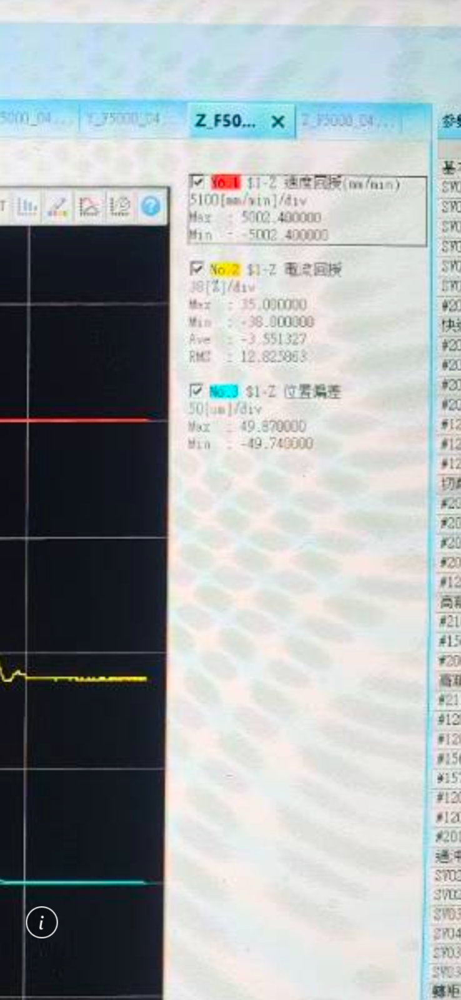
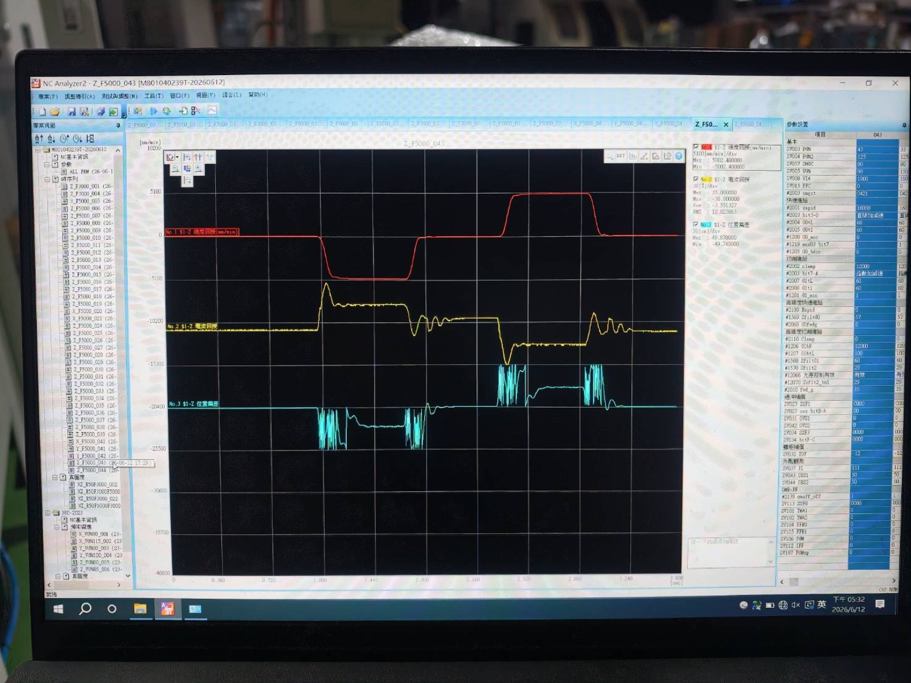
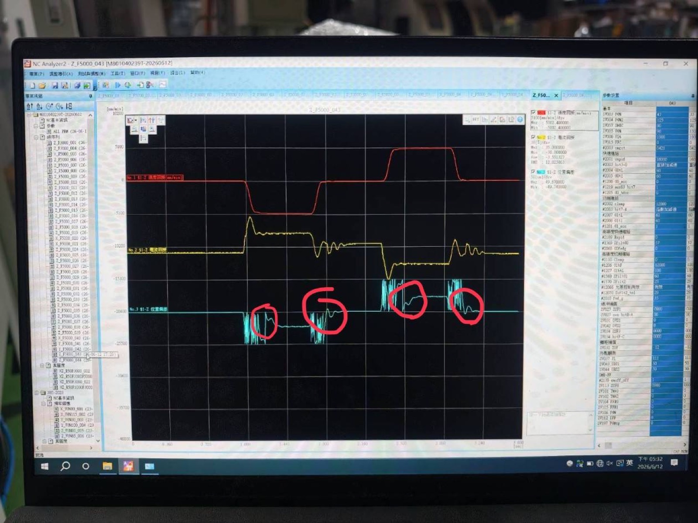

判斷重點
這份資料的重點是量級。D0.4 mm 鑽頭直徑只有 400 μm；綠色 Z 軸位置偏差的單向極值接近 50 μm，約等於刀徑 12.5%。
偏差若落在空跑段，風險有限；若落在刀尖接觸石英、接近孔底或再入刀段，控制器看到的是位置差，刀尖承受的是軸向衝擊。

目前可把伺服動態列為高優先驗證主因。仍要排除刀具批次、主軸 runout、夾持、石英批次、排屑、超音波狀態與對刀誤差。
截圖怎麼讀

- 紅色曲線：Z 軸速度回授，單位 mm/min。可用來判斷快速接近、切削進給、孔底停止、退刀等段落。
- 黃色曲線：Z 軸電流回授，單位 A。若與位置偏差尖峰同步，代表該段可能有高補償或負載突變。
- 綠色曲線：Z 軸位置偏差，單位 μm。它描述命令位置與實際位置的差距，是判斷刀尖是否受衝擊的第一指標。

條件 → 機制 → 結果 → 驗證
- 條件：D0.4 mm PCD 鑽頭、石英、G83 啄鑽，壽命約 1000 孔與 60 孔的差異。
- 機制：±50 μm Z 軸位置偏差可能在再入刀或孔底段轉成軸向衝擊。
- 結果：PCD 刃口微裂、鑽尖崩裂、孔壁品質變差，後續負載升高。
- 驗證：壽命差參數若有更大位置偏差與電流尖峰，伺服因果可信度上升。
- 同批刀具、同伸出量、同石英批次與同排屑條件。
- 位置偏差正負方向、取樣率、G83 各段時間戳記。
- 顯微鏡下的刀具破損形貌與孔品質紀錄。
- 切回壽命好參數後，峰值下降且孔品質改善。
週一現場優先看什麼
- 先備份目前參數、壽命好參數與壽命差參數，確認 rollback 方式。沒有 rollback，就不要切削石英。
- 先空跑，不裝刀；再裝刀空跑；最後才做少量石英孔。每一步都看 Z 軸位置偏差峰值、RMS、settling time 與電流尖峰。
- 把 G83 的快速接近、切削進給、孔底停止、退刀啟動逐段標時間戳記。尖峰若固定落在接觸段，風險才真正成立。
- 每 5 或 10 孔看刀尖與刃口形貌。若第一孔就崩刃，停止測試，回到伺服與夾持條件排查。
現場要問機台廠四件事：位置偏差正負方向、取樣率、波形是否濾波、壽命好／差兩組伺服參數差異。這四件事決定後續資料能不能形成強證據。
結論
目前證據已經足以把 Z 軸伺服動態列為週一第一優先驗證項。關鍵是用 A/B 測試確認三條線：壽命差參數是否帶來更大的位置偏差與電流尖峰；壽命好參數是否能讓尖峰下降；孔品質與刀具形貌是否跟著改善。
只要三條線同步成立，伺服主因的可信度就會大幅上升。若其中一條不成立，就要回頭檢查刀具、runout、材料、排屑、超音波與對刀。